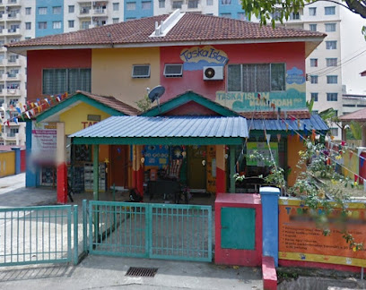
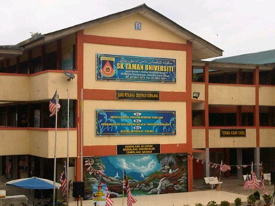
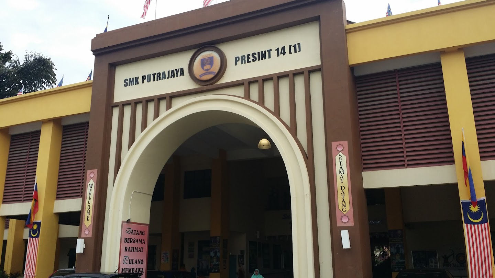
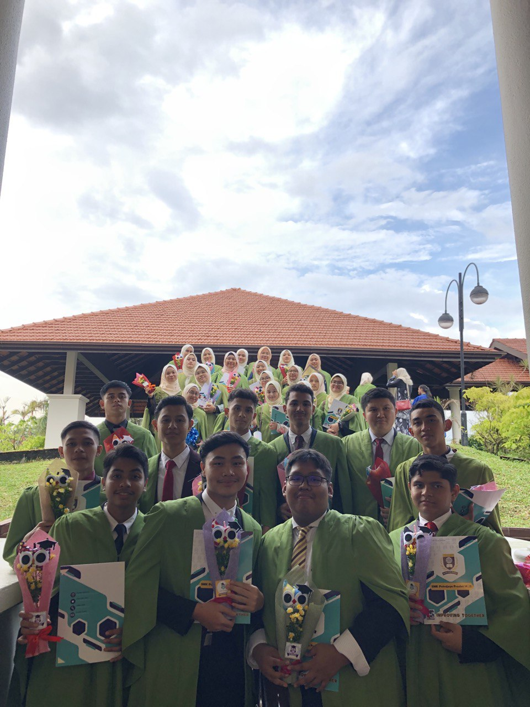

Education Journey

KINDERGARTEN

I went to TIPI when I was 4 years old until 6 years old. It is located at Jalan PP 2, Taman Pinggiran Putra, 43300 Seri Kembangan, Selangor, which is quite close to my house at the time. The building is separated into two parts, nursery for 2-4 years old and kindergarten for 5-6 years old. I remember crying my eyes out when my mother dropped me off every morning, but after few weeks, I cried because I did not want to go home instead. One of the teacher there was very fierce, but I loved it when she fed me by hand. My favourite menu there was Labu Masak Lemak. I also have few memories running to the playground beside the kindergarten. When I turned 6, I took care of the younger kids there, so I learned to be dependable at early age.
PRIMARY SCHOOL

My experience at primary school was like a whole new world for me. On my first day of school, my mother and I woke up early and ate breakfast, then he sent me to my primary school, Sekolah Kebangsaan Taman Universiti, located at Jalan Indah 1, Taman Universiti Indah, 43300 Seri Kembangan, Selangor. I had a lot of friends, but I am the closest to Alia, Farhana, and Nurin Amani. I was active in Robotic Competition and won a few medals, so my teacher offered me to make me a Briged Cyber Prefect. My favourite sports back then were netball, and track and field. In addition, I was in Girl Guide and went to a lot of school camps around Malaysia. My UPSR result was 4A 1B+.
SECONDARY SCHOOL
 
Sekolah Menengah Kebangsaan Putrajaya Presint 14(1) (2015-2019)
I spent most of my teen time here at SMKPP 14(1). Because I moved to Putrajaya, the school is right across my house, so I walked every day. The best part about living close to school is that I don't have to get up early and can return home whenever I want. The location is at 1A, Jalan P14, Presint 14, 62050 Putrajaya, Wilayah Persekutuan Putrajaya. I was very active in school, with curricular activities, classes, and tuition that filled my clock every day. For curricular, I went to a lot of Girl Guide training, even internationally. ...Collecting badges became a hobby of mine back then, and it is like an honor for my contribution to the movement. That resulted in me becoming the vice president of the club. Moreover, I was also the vice president of the school editorial board, known as Sidang Redaksi. In 2017, our editorial group won first place as the pioneer of the digital school magazine in Malaysia. We received RM 3000 and were featured in the newspaper for our achievement, while we were busy studying for PT3. I still wonder how I managed to survive all that. Not only that, I joined a handful of cooking competitions around Malaysia, as the school representative. The biggest cooking competition I went to was sponsored by Maggi, and I placed third. All these experiences build me to be who I am today. As for the academic aspect, I was blessed with a lot of opportunities and support, resulting in an outcome that I can be proud of. I attained 8A for PT3 and 8A 1B+ for SPM. Looking back, I learned a lot, struggled a lot, and I lost track of how many times I had to pick myself up again. This school has witnessed my growth, both good and bad.
DIPLOMA


Universiti Teknologi Mara Kampus Rembau (2022-2023)
I started my university life here at UiTM Cawangan Negeri Sembilan Kampus Rembau, Jalan Kampung Pilin, 71300 Rembau, Negeri Sembilan. I decided to enroll here when I was 13, as I was interested in Information Management back then. When I consulted my counseling teacher to help me find my education and career path, we researched together and took some tests. Turned out this course is the best fit for me. So it is not a surprise nor a coincidence that I am here. My classmates and I went through a lot with unfamiliar faces, the changes in our study environment, and ODL learning were tough but they made us more adaptable to the situation. After we were allowed to study physically, we were closer than ever. We enjoyed our time and company together, the last-minute assignment, and nightless studying. I appreciate the people that I get to know here, the kind lecturers, the fun housemates, the outgoing classmates, and the cats around the campus. My main goal as a student here is to get the ANC award for my diploma. Inshaallah.